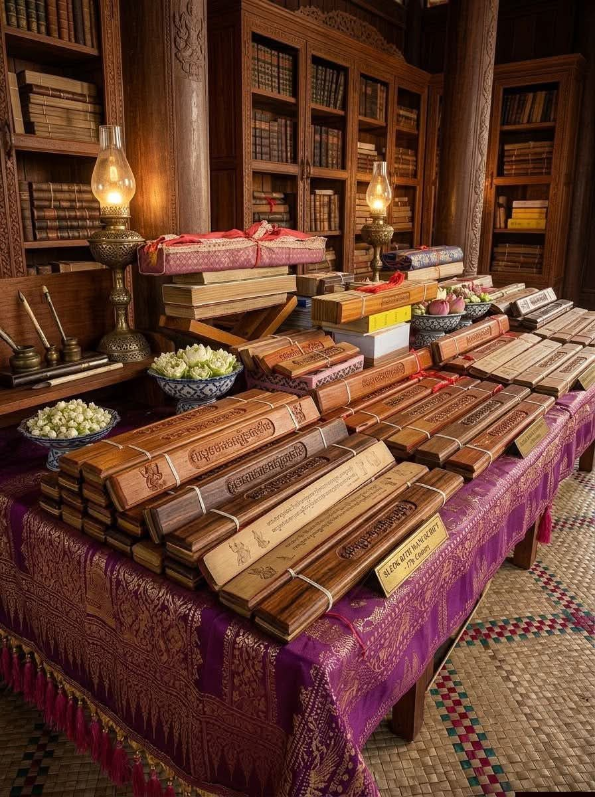
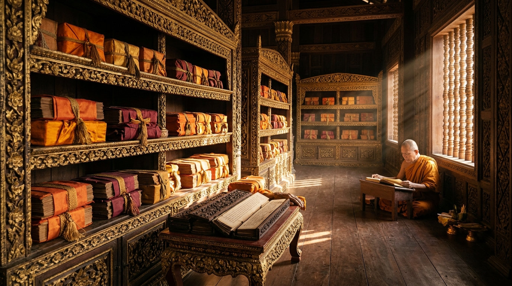
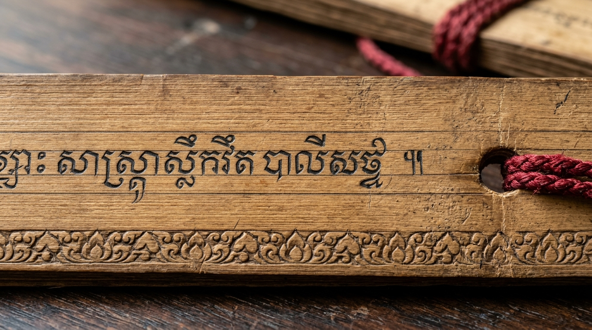

សាស្រ្តាទេសន៍
កត់ត្រាពុទ្ធវចនៈ ជាតក និងគម្ពីរធម៌វិន័យសម្រាប់ព្រះសង្ឃសូត្រ និងសម្តែងធម៌ទេសនាប្រដៅពុទ្ធបរិស័ទ។
ស្វែងយល់ពីសិល្បៈចារសាស្រ្តាស្លឹករឹតដែលជាសៀវភៅដំបូងរបស់បុព្វបុរសខ្មែរ រួមទាំងចូលរួមចែករំលែក និងរក្សាទុករូបភាព ឬវីឌីអូឯកសារសាស្រ្តាបុរាណនៅក្នុងបណ្ណសារឌីជីថលដ៏ស្រឡះស្អាតនេះ។

ចងភ្ជាប់ដោយខ្សែសូត្រក្រហម និងក្បាំងឈើក្បាច់មាស
មុនពេលមានក្រដាស និងម៉ាស៊ីនបោះពុម្ព បុព្វបុរសខ្មែរបានប្រើប្រាស់ស្លឹកទ្រាំងដើម្បីកត់ត្រាធម៌វិន័យ ប្រវត្តិសាស្ត្រ ក្បួនឱសថបុរាណ និងអក្សរសិល្ប៍រឿងព្រេងផ្សេងៗទុកជាកេរមរតកដល់កូនចៅជំនាន់ក្រោយ។

សាស្រ្តាស្លឹករឹតត្រូវបានតម្កល់ទុកយ៉ាងគោរពនៅតាមវត្តអារាម ជាពិសេសនៅក្នុង «ហោត្រ័យ» ឬទូឈើឆ្លាក់ក្បាច់យ៉ាងផ្ចិតផ្ចង់។ គម្ពីរនីមួយៗត្រូវបានរុំដោយកំណាត់សំពត់ស្អាត ដើម្បីការពារពីធូលី សំណើម និងសត្វល្អិតកាត់បំផ្លាញ។
ការអភិរក្សសាស្រ្តាស្លឹករឹតជាទម្រង់ឌីជីថល តាមរយៈការថតរូបភាព និងវីឌីអូឯកសារ គឺជាវិធីដ៏សំខាន់ដើម្បីជួយឲ្យមរតកទាំងនេះនៅគង់វង្សជារៀងរហូត។
កត់ត្រាពុទ្ធវចនៈ ជាតក និងគម្ពីរធម៌វិន័យសម្រាប់ព្រះសង្ឃសូត្រ និងសម្តែងធម៌ទេសនាប្រដៅពុទ្ធបរិស័ទ។
ប្រមូលផ្តុំរឿងព្រេង អក្សរសិល្ប៍កំណាព្យ និងរឿងនិទានអប់រំសីលធម៌ដ៏ល្បីល្បាញរបស់សង្គមខ្មែរ។
ផ្ទុកក្បួនហោរាសាស្ត្រ ក្បួនថ្នាំបុរាណ វេយ្យាករណ៍ ច្បាប់ទូន្មាន និងប្រវត្តិសាស្ត្រពង្សាវតារខ្មែរ។
អាន ស្រាវជ្រាវ ចម្លង ឬទាញយកឯកសារប្រវត្តិសាស្រ្តាស្លឹករឹតតាមសម័យកាល រួមទាំងអាចបន្ថែមអត្ថបទ ឬភ្ជាប់ឯកសារ PDF/TXT ចូលក្នុងបណ្ណាល័យនេះបានផងដែរ។
ទម្រាំក្លាយជាគម្ពីរសាស្រ្តាមួយខ្សែ សិប្បករត្រូវឆ្លងកាត់ដំណាក់កាលយ៉ាងល្អិតល្អន់ និងអត់ធ្មត់ខ្ពស់។
កាត់ស្លឹកទ្រាំងខ្ចីល្មមដែលមិនទាន់លាតពេញលេញ ដើម្បីឲ្យសាច់ស្លឹកទន់ ស្វិត និងជាប់ធន់បានរាប់រយឆ្នាំ។
យកស្លឹកទៅស្ងោរ ហាលសន្សើម និងហាលថ្ងៃឲ្យស្ងួតស្មើ រួចកាត់តម្រឹមទំហំឲ្យស្មើគ្នា និងចោះរន្ធដោតខ្សែ។
ប្រើដែកចារមុតស្រួចឆ្លាក់តួអក្សរខ្មែរលើផ្ទៃស្លឹករឹតតាមបន្ទាត់ត្រង់ស្មើយ៉ាងប្រណីត។
ជូតម្រែងភ្លើងលាយប្រេងធម្មជាតិចូលក្នុងស្នាមចារឲ្យអក្សរលេចច្បាស់ខ្មៅក្រឹប រួចដោតខ្សែចងជាខ្សែគម្ពីរ។

រូបភាព និងវីឌីអូទាំងអស់ត្រូវបានផ្ទុកតែពេលអ្នកអូសមកដល់ប៉ុណ្ណោះ ដើម្បីឲ្យវេបសាយស្រាល និងដំណើរការលឿនបំផុត។ ចុចលើកាតនីមួយៗដើម្បីមើលពេញអេក្រង់។
អ្នកប្រើប្រាស់មានសិទ្ធិបញ្ចូលរូបភាព ឬវីឌីអូដោយផ្ទាល់។ ឯកសារដែលបានបញ្ចូលនឹងរក្សាទុកក្នុង Browser (IndexedDB) ហើយបង្ហាញភ្លាមៗនៅក្នុងបណ្ណសារខាងលើ។
គាំទ្ររូបភាព (JPG, PNG, WEBP) និងវីឌីអូ (MP4, WEBM)